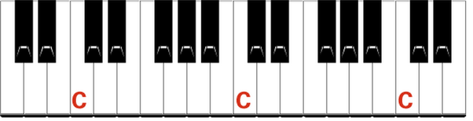
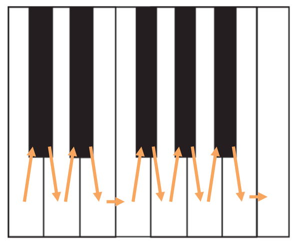
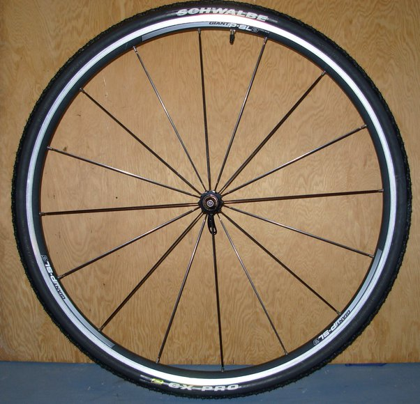

What is the practical usefulness of learning the Nth root of a number?
My soon to be 7th grade son asked me. I/we could think of good reasons for finding 2nd and 3rd root, but not Nth. Any good explanations?
Does he play the piano, by any chance?
You may teach him that when the frequency of a sound doubles, we perceive it as a rise by an octave. That sounds "almost the same" except that it's floating higher in musical space. Show him how middle C and the next C up sound kind of the same, and when played together they sound like the same thing playing twice - no harmony is formed.

(It doesn't matter if you choose C or something else, just pick any two notes that are situated in the same location relative to the black keys.)
So an octave is a doubling of the frequency. To get from one C to the next on the piano, you can see that we need to move 12 steps: from C to C# (the black key right above the C), and then to D (the white one to the right of C), and then to D#, and so on. Twelve steps, called semitones, overall.

In modern tuning, all of those steps are the same - meaning, the ratio between the frequencies of two tones that are a semitone apart is always the same. The frequency ratio between C and C# is the same as that between C# and D, or E and F, or B♭ and B.
[Why "ratio"? Because that's how we perceive sound. When two notes have a certain frequency ratio between them, they sound like a particular harmonic interval. This is true of ratios, but not of differences or any other measure of separation.]
All right. So now, what should the frequency ratio of a semitone be in order for 12 of them to fill up an octave? If we start with the frequency of middle C and keep multiplying by that unknown ratio, we should get the frequency to double after 12 multiplications. The (real) number which, multiplied by itself 12 times, becomes 2, is called \sqrt[12]{2}. The twelfth root of 2. (I'm sorry, I know that "twelfth" is an awful word, but it's not as bad as "twelfths".)
One reason this is interesting is that this "equal temperament" tuning violates the ideal harmonic ratios by a little bit. The Greeks observed that harmonic ratios that are pleasing to the ear are ratios of small integers; for example a ratio of 3:2 is a perfect fifth (G to C). However, there are 7 semitones between C and G, so the actual ratio of a fifth on a piano is
\left(\sqrt[12]{2}\right)^7 = 2^{7/12} \approx 1.4983
which is close, but not quite equal, to the ideal ratio of 1.5. Using a little bit of the theory of continued fractions one can show that the choice of 12 steps to an octave is actually a very good choice, from the perspective of simultaneously keeping equal ratios and approximating the perfect fifth well.
That's one way to motivate the definition of higher-order roots. I think though that it's important to realize that such basic mathematical definitions are often motivated by the desire for completeness and symmetry, more so than by this or that natural phenomenon.
Once we have addition, we find subtraction necessary to "invert" addition and solve various problems involving addition. ("two plus what is seven?")
Once we have multiplication, we find division necessary to "invert" it and solve various problems involving multiplication. ("two times what is six?")
Once we have exponentiation ("3 to the power of 5..."), we find two things necessary to "invert" it and solve various problems involving exponentiation. One is taking logarithms, and the other is extracting roots. The reason we need two operations instead of one here is because exponentiation is not commutative (3^4 is not 4^3). ("What to the power of 5 is 32" is extracting a root, while "two to the power of what is 32" is a logarithm).
Another way to motivate the introduction of roots becomes apparent when we teach children about complex numbers. This may not be helpful to a 7th grader but he may still be curious to know that every number has not one but seven 7th roots, or sixteen 16th roots, etc., and they look like this:

For that reason the roots of a number are sometimes useful in solving geometric problems that have equally-spaced points on a circle, or regular polygons, and many other things besides.